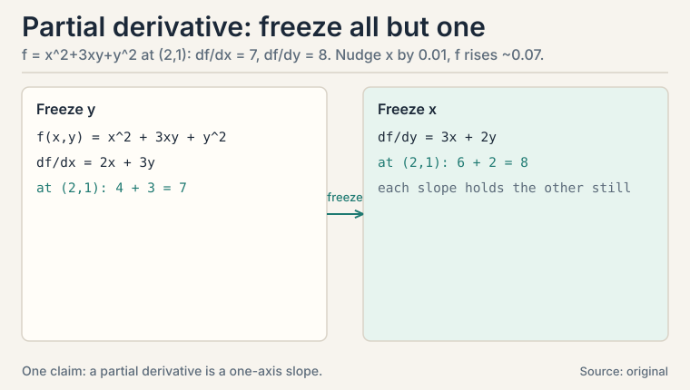
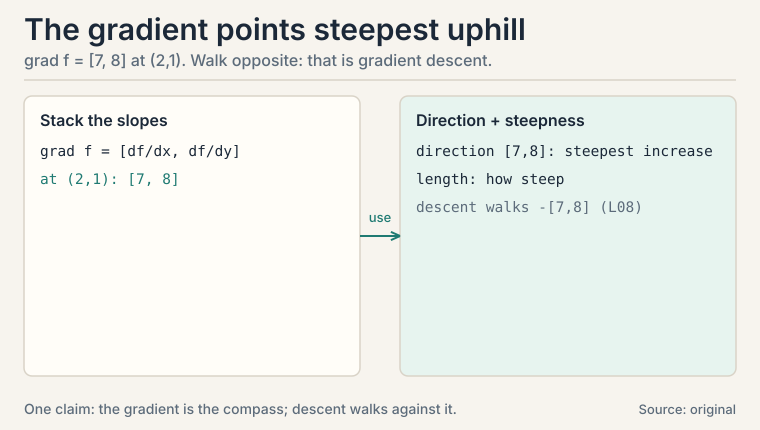
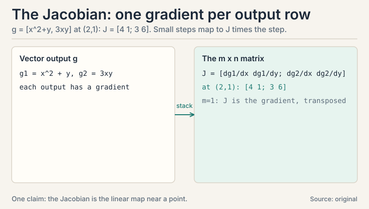
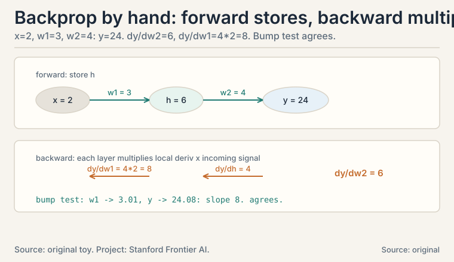
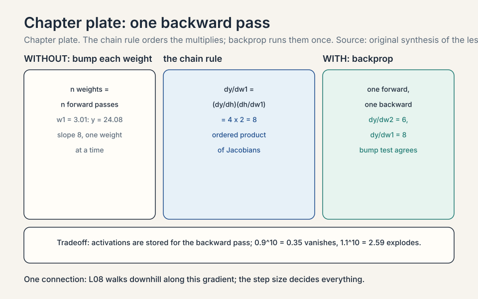

Lecture 7: Gradients, Jacobians, and the Chain Rule
Video blocked (ad-blocker or local file mode).
Watch on YouTubeVideo not loading? Watch on YouTube
The NPTEL lecture this chapter follows: the first of the calculus block, derivatives from zero.
The task: optimize functions of a million variables
A neural network’s loss is one number computed from millions of weights. Training means adjusting every weight to lower that number. School calculus differentiates functions of one variable. ML needs the same idea for functions of a million variables, built in layers.
The lecture builds this in five parts (Lectures 31-35). This lesson rebuilds each part from zero, then aims them all at one target: backpropagation, the algorithm that trains every neural network (CS229 L08).
Subchapter: partial derivatives, one variable moves
Take f(x, y) = x^2 + 3xy + y^2. How fast does f change when x moves? Treat y as a constant number and differentiate normally. That is the partial derivative with respect to x, written df/dx:
f(x, y) = x^2 + 3xy + y^2 df/dx = 2x + 3y (y frozen: derivative of 3xy is 3y) df/dy = 3x + 2y (x frozen) at (x, y) = (2, 1): df/dx = 4 + 3 = 7, df/dy = 6 + 2 = 8
At the point (2, 1), nudging x up by 0.01 raises f by about 0.07. nudging y up by 0.01 raises f by about 0.08. Each partial derivative is a one-variable slope with everything else held still.
Verify the nudge: f(2.01, 1) = 4.0401 + 6.03 + 1 = 11.0701 against f(2, 1) = 4 + 6 + 1 = 11. The rise is 0.0701 for a 0.01 nudge: slope 7.01, matching df/dx = 7. The derivative is not magic: it is the nudge ratio, in the limit.

Subchapter: the gradient, all slopes in one vector
Stack the partial derivatives into a vector. That vector is the gradient, written with an upside-down triangle, nabla:
grad f = [ df/dx, df/dy ] = [ 2x + 3y, 3x + 2y ] at (2, 1): grad f = [ 7, 8 ]
The gradient points in the direction of steepest increase. Its length says how steep. Walk opposite the gradient and you descend fastest: that is gradient descent, the subject of L08.
Why steepest? The directional derivative: the slope along any unit direction u is grad f dot u, which is largest when u aligns with grad f (L01’s dot product, maximized at cosine 1). The gradient is not just a list of slopes: it is the direction itself.

Subchapter: the Jacobian, the gradient grown into a matrix
What if the output is also a vector? A layer maps R^n to R^m: n inputs, m outputs. Each output has its own gradient (a row of n partial derivatives). Stack the m rows. The result is the Jacobian matrix, m x n:
g(x, y) = [ x^2 + y, 3xy ] (R^2 -> R^2)
J = [ dg1/dx dg1/dy ] = [ 2x 1 ]
[ dg2/dx dg2/dy ] [ 3y 3x ]
at (2, 1): J = [ 4 1 ]
[ 3 6 ]
The Jacobian is the linear approximation of the whole map near a point: g(p + small step) is about g(p) + J * step. When m = 1 the Jacobian is a single row: the gradient, transposed. One idea, two shapes.
Check the approximation: g(2.01, 1) = [4.0401 + 1, 6.03] = [5.0401, 6.03]. The linear prediction: g(2,1) + J*[0.01, 0] = [5, 6] + [0.04, 0.03] = [5.04, 6.03]. Matches to the second decimal. The Jacobian is the map’s local linear shadow.

Subchapter: the Hessian, curvature in a matrix
First derivatives say which way is downhill. Second derivatives say how the slope itself changes: the curvature. Differentiate each partial derivative again. For f(x, y) = x^2 + 3xy + y^2:
H = [ d2f/dx2 d2f/dxdy ] = [ 2 3 ]
[ d2f/dydx d2f/dy2 ] [ 3 2 ]
The Hessian is symmetric (mixed partials agree) and square. Its eigenvalues are the curvatures along the principal directions (L03’s eigenvalues return as shape detectors). Here they are 5 and -1. Negative eigenvalue: the surface curves down along one direction. This toy f is not a bowl at all: it is a saddle. The gradient [7, 8] points uphill, but uphill from a saddle leads along a ridge, not to a peak. L08 will make this the central drama of optimization: the Hessian decides whether a stationary point is a minimum, a maximum, or a saddle. For a contrast, g(x, y) = x^2 + 2y^2 has Hessian diag(2, 4), eigenvalues 2 and 4, both positive: a true bowl.
Subchapter: Taylor’s approximation, the linear shadow upgraded
The Jacobian gave a linear approximation. Add the Hessian and you get the quadratic one. Taylor’s theorem: near a point p,
f(p + h) ~ f(p) + grad f(p) . h + (1/2) h^T H(p) h
Worked on g(x, y) = x^2 + 2y^2 at p = (1, 1), step h = (0.1, 0.05). True value at (1.1, 1.05): 1.21 + 21.1025 = 3.4150. Linear (Jacobian only): 3 + [2, 4] . [0.1, 0.05] = 3 + 0.2 + 0.2 = 3.4000. Quadratic: add (1/2)(20.01 + 4*0.0025) = 0.015, total 3.4150. Exact to four decimals. The quadratic term fixed the linear error of 0.015. Newton’s method (L08’s Lecture 45) minimizes this quadratic model in one step. Trust-region methods refuse steps where the model and the function disagree. Every second-order optimizer is Taylor’s theorem with a budget.
Subchapter: the three gradients ML uses daily
Three vector-calculus facts appear in nearly every ML derivation. All follow from “differentiate one coordinate, stack the results.” Worked with w = [2, -1], x = [3, 4]:
1. grad_w (w . x) = x. Check: w.x = 2*3 + (-1)*4 = 2. d/dw1 = x1 = 3, d/dw2 = x2 = 4. grad = [3, 4] = x. 2. grad_x (w . x) = w. Symmetric: d/dx1 = w1 = 2. 3. grad_w ||w||^2 = 2w. ||w||^2 = 4 + 1 = 5. d/dw1 = 2*w1 = 4, d/dw2 = 2*w2 = -2. grad = [4, -2] = 2w.
Fact 1 is the linear layer’s weight gradient: the input x flows straight into the gradient. Fact 3 is the ridge penalty (L09): its gradient 2w pulls weights toward zero with force proportional to their size. Memorize all three as reflexes. Derivations that take a page without them take a line with them.
The chain rule: derivatives compose like functions
Neural networks are compositions: loss of prediction of layer of layer of input. The chain rule differentiates compositions:
one variable: d/dx f(g(x)) = f'(g(x)) * g'(x) many: multiply the Jacobians in order
Each layer contributes its Jacobian. The full derivative is their product. Work the one-variable case by hand: f(g) = g^2, g(x) = 3x + 1. At x = 2: g = 7, f = 49. df/dx = 2g * 3 = 42. Check: f(x) = (3x+1)^2 = 9x^2 + 6x + 1, derivative 18x + 6 = 42 at x = 2. The chain rule agrees with direct differentiation, as it must.
Backpropagation is the chain rule computed backwards, reusing each layer’s result so no work repeats.
Subchapter: the multivariable chain rule, worked
One-variable chain rule multiplies two numbers. The multivariable version multiplies Jacobians. Work it on a two-stage map. Stage 1: h = W x with W = [[1, 2],[3, 0]] and x = [1, 2]. Stage 2: y = h1^2 + h2^2 (sum of squares).
forward: h = [1*1 + 2*2, 3*1 + 0*2] = [5, 3]
y = 25 + 9 = 34
Question: dy/dx, the 1x2 Jacobian. Chain the stage Jacobians:
J1 = dh/dx = W = [ 1 2 ] (linear map: Jacobian is W)
[ 3 0 ]
J2 = dy/dh = [ 2*h1, 2*h2 ] = [ 10, 6 ] (1x2 row)
dy/dx = J2 * J1 = [ 10, 6 ] [ 1 2 ] = [ 10*1+6*3, 10*2+6*0 ]
[ 3 0 ] [ 28, 20 ]
Check directly: y = (x1 + 2 x2)^2 + (3 x1)^2 = (x1+2x2)^2 + 9 x1^2. dy/dx1 = 2(x1+2x2) + 18 x1 = 2*5 + 18 = 28. dy/dx2 = 4(x1+2x2) = 20. The product of Jacobians agrees. This is exactly what backprop does layer by layer: each layer hands the next one its Jacobian, and the running product accumulates the full derivative. The order matters: J2 * J1, downstream first. That order is the whole reason the backward pass runs backward.
Backprop by hand: a tiny network, real numbers
The whole lesson converges here. A two-weight network, no nonlinearity (keep the arithmetic visible. The chain rule is the same with one):
forward: x = 2 --[w1=3]--> h = 6 --[w2=4]--> y = 24
y = w2 * w1 * x
Subchapter: the backward pass, one weight at a time
One question per weight: how does y change when this weight moves?
step 1, dy/dw2: y = w2 * h, h frozen --> dy/dw2 = h = 6 step 2, dy/dw1: chain through h. dy/dh = w2 = 4 (how y responds to h) dh/dw1 = x = 2 (how h responds to w1) dy/dw1 = (dy/dh) * (dh/dw1) = 4 * 2 = 8
Check by brute force: bump w1 to 3.01. Then h = 6.02, y = 24.08. The change is 0.08 for a 0.01 bump: slope 8. The chain rule agrees.

Subchapter: why backward, not forward
Now see why it runs backward. dy/dw1 needed dy/dh, which was computed on the way back from the output. Each layer’s backward pass needs only its local derivative and the signal arriving from the layer after it. That locality is backprop: one forward sweep stores the intermediates, one backward sweep multiplies the Jacobians, every weight gets its gradient. Cost: about the same as two forward passes, no matter how deep the network.
Going forward you would recompute the downstream chain separately for every weight: O(n^2) work instead of O(n). The backward order is not a convention: it is the complexity difference between training a network and not training it.
flowchart LR
X["x = 2"] --> H["h = w1*x = 6"]
H --> Y["y = w2*h = 24"]
Y -->|"dy/dh = 4"| H2["h: gets 4"]
H2 -->|"dy/dw1 = 4*2 = 8"| W1["w1: gradient 8"]
Y -->|"dy/dw2 = 6"| W2["w2: gradient 6"]
Subchapter: backprop with a nonlinearity, by hand
The draft’s toy was linear. Real networks have nonlinearities. Add a sigmoid and watch what changes. Sigmoid: s(z) = 1/(1+e^-z), derivative s’(z) = s(z)(1 - s(z)). Network: x = 2, w1 = 3, h = 6, a = s(6), w2 = 1, y = w2 * a, target t = 0.5, loss L = (y - t)^2 / 2.
forward: a = s(6) = 0.9975
y = 1 * 0.9975 = 0.9975
L = (0.4975)^2 / 2 = 0.1238
backward: dL/dy = y - t = 0.4975
dL/dw2 = dL/dy * a = 0.4975 * 0.9975 = 0.4963
dL/da = dL/dy * w2 = 0.4975
da/dh = a(1-a) = 0.9975 * 0.0025 = 0.0025
dL/dw1 = dL/da * da/dh * dh/dw1
= 0.4975 * 0.0025 * 2 = 0.0025
Compare: dL/dw2 = 0.4963, dL/dw1 = 0.0025. The early weight gets 200 times less signal. The culprit is da/dh = 0.0025: the sigmoid at h = 6 is saturated, nearly flat. The chain rule multiplied by a near-zero factor, and the gradient nearly died. This is the vanishing gradient, caught red-handed in four lines of arithmetic. It is why modern networks use ReLU. ReLU (rectified linear unit) is max(0, z): its derivative is 0 or 1, never a small fraction. One exception: at exactly z = 0 the graph has a kink and no derivative exists. Frameworks pick a subgradient there (typically 0), and either choice is valid. Exact 0.0 is a measure-zero event, so the 0-or-1 claim holds everywhere else. That is also why initialization keeps pre-activations near zero, where the sigmoid’s derivative is largest (0.25 at z = 0).
Subchapter: finite differences, the gradient checker
How do you know a hand-derived or autograd gradient is right? Check it against brute force. The central difference:
df/dx ~ [ f(x + eps) - f(x - eps) ] / (2 eps)
On f(x) = (x-3)^2 at x = 0 with eps = 1e-5: (f(1e-5) - f(-1e-5)) / 2e-5 = -6.000000. True derivative -6. Agreement to six decimals. The decision rule: relative error below 1e-7 means the analytic gradient passes. Two failure modes: eps too large and the curvature pollutes the estimate (truncation error grows with eps^2. Eps too small and floating-point subtraction cancels the digits (roundoff). 1e-5 sits between them for float64. Gradient checking is slow (two evaluations per parameter) so it runs on tiny models only, once, before training. Every serious training pipeline runs it. A wrong gradient trains confidently in the wrong direction: the checker is the cheapest insurance in ML.
Where it breaks: the chain rule multiplies, and products misbehave
L08’s optimization story starts from a crack visible right here. The gradient of a deep network is a product of many Jacobians. Each factor below 1 shrinks the signal (vanishing gradients). each above 1 grows it (exploding gradients). The RNN chapter of CS229S L02 demonstrates both with 0.9^10 = 0.35 and 1.1^10 = 2.59. The chain rule that makes learning possible also makes it fragile. Architectures like residuals and normalization exist to keep these products near 1.
Subchapter: two ways to multiply, and the complexity that picks one
Backprop never forms the full Jacobian. It multiplies Jacobian-vector products. There are two orders. Forward mode (JVP): push a tangent vector (a small change to the inputs, one input direction) forward through the Jacobians, one input direction at a time. Cost: one pass per input. Reverse mode (VJP): pull a cotangent vector (how the loss shifts when one output shifts) backward, one output at a time. Cost: one pass per output. Backprop is reverse mode.
forward mode cost ~ n_inputs passes reverse mode cost ~ n_outputs passes
The decision rule is pure arithmetic. A neural net has millions of inputs (weights) and one output (the loss): reverse mode needs one pass, forward mode needs millions. That is why every deep learning framework differentiates in reverse. The reverse case flips for few inputs and many outputs: differentiating a 3-parameter physics simulation that outputs a million-pixel image wants forward mode. JAX exposes both (jacfwd, jacrev). PyTorch’s autograd is reverse mode. The draft’s O(n) vs O(n^2) claim is this table with n_inputs = n and n_outputs = 1.
| Idea | Shape | Meaning |
|---|---|---|
| Partial derivative | number | slope along one axis, rest frozen |
| Gradient | vector (n) | direction of steepest increase; length is steepness |
| Jacobian | matrix (m x n) | linear approximation of a vector-valued map |
| Hessian | matrix (n x n) | curvature; eigenvalues are principal curvatures; toy: 5 and -1, a saddle |
| Taylor quadratic | scalar model | f + grad.h + 1/2 h^T H h; toy: 3.4150 exact to 4 decimals |
| Chain rule | product of Jacobians | derivative of a composition; downstream first |
| Backprop | backward pass | chain rule with reuse; one gradient per weight |
| Reverse vs forward mode | complexity choice | 1 pass vs n_inputs passes; reverse wins for one loss |
| Finite differences | scalar check | central difference, eps = 1e-5, relative error < 1e-7 |
| ML staple gradients | vector facts | grad_w(w.x) = x; grad_w||w||^2 = 2w |
What is used where: the real systems
| Math idea | Where it appears | Why there |
|---|---|---|
| Gradient | Every optimizer | descent walks against it (L08) |
| Chain rule | Backprop (CS229 L08) | one backward sweep trains the network |
| Jacobian-vector products | Autograd (PyTorch, JAX) | never form the full matrix |
| Hessian | Second-order methods, saddle analysis | curvature; Newton’s method (L08) |
| Taylor expansion | Trust-region and Newton optimizers | quadratic model of the loss |
| Finite differences | Gradient checking | verify analytic gradients before training |
| Partial derivatives | Sensitivity analysis | which input moves the output most |

The gradient stacks all partial derivatives into one vector. For f(x,y) = x^2 + 3xy + y^2 at (2,1), it is [7, 8]: nudging x raises f at rate 7, nudging y at rate 8. It points in the direction of steepest increase, so walking opposite it is the fastest way down. Every gradient-descent optimizer in ML is a machine for walking opposite gradients. The derivative is the one-variable case: one number. The gradient is the multi-variable case: a vector of partial derivatives, one per input. Same idea, more dimensions. The Jacobian generalizes once more, to vector-valued outputs.
Network: x = 2, w1 = 3, w2 = 4, y = w2w1x = 24. Backward: dy/dw2 = h = 6 (freeze h, differentiate w2*h). dy/dw1 chains through h: dy/dh = 4 times dh/dw1 = 2, giving 8. Verified by brute force: bumping w1 by 0.01 raises y by 0.08. Each layer needs only its local derivative times the incoming signal, so one backward sweep gradients every weight. Because each weight’s gradient chains through everything after it. Going backward, the signal dy/dh arrives exactly when layer 1 needs it, already containing all downstream factors. Going forward you would recompute the downstream chain separately for every weight: O(n^2) work instead of O(n).
The matrix of all first-order partial derivatives of a vector-valued function. For g(x,y) = [x^2+y, 3xy] at (2,1), J = [4 1; 3 6]. It is the linear approximation of the map near that point: small input steps map to J times the step. A layer with n inputs and m outputs has an m x n Jacobian; the gradient is the m = 1 case. Rarely. It is enormous (millions squared). Backprop never builds it: it multiplies Jacobian-vector products layer by layer, which needs only O(weights) memory. Forming the full matrix is the classic beginner inefficiency.
The slope along any unit direction u is the directional derivative: grad f dot u. By L01’s geometry, a dot product with a unit vector is maximized when the vectors align (cosine 1). So the direction maximizing the slope is grad f itself. The gradient is not just a list of slopes: the dot-product geometry promotes it to a direction. The gradient’s own length: grad f dot (grad f / ||grad f||) = ||grad f||. At (2,1), walking along [7,8] climbs at rate sqrt(49+64) = 10.6 per unit step. Steepest direction, and the number says how steep.
g(2,1) = [5, 6]. Nudge x by 0.01: true g(2.01, 1) = [5.0401, 6.03]. Linear prediction: g(2,1) + J [0.01, 0] = [5,6] + [0.04, 0.03] = [5.04, 6.03]. Agreement to the second decimal. The Jacobian is the map’s local linear shadow: exact for infinitesimal steps, excellent for small ones. When the step is large or the curvature is high. The approximation drops the second-order terms, which grow with step^2. Backprop’s learning rate must stay small partly for this reason: each update trusts the local linear shadow, which is only valid nearby.
One. That is the whole point of backprop: the backward sweep computes every weight’s gradient in a single pass, reusing each layer’s downstream signal. Forward-mode differentiation would need one pass per weight: a million passes. The backward order turns an impossible computation into two sweeps. When there are few inputs and many outputs: then forward mode’s per-input passes are cheaper than backward mode’s per-output passes. Deep learning has few outputs (one loss) and millions of inputs (weights), so backward mode wins. The choice is pure complexity arithmetic.
From the chain rule multiplying many Jacobians. A 50-layer network’s gradient is a product of 50 matrices. If each shrinks vectors slightly (spectral norm, the largest singular value of the matrix, below 1), the product collapses: 0.9^50 is 0.005. Early layers get no learning signal. Sigmoids saturate (derivative near 0), which is why ReLU (derivative 0 or 1, except at the kink z = 0 where frameworks return a subgradient, typically 0) and residuals (gradient highways) replaced them. The residual connection adds the input to the layer’s output: y = x + F(x). The gradient gets a direct +1 path through the addition at every layer, so the product always contains a term that never shrinks. The signal rides the highway even when F’s Jacobian vanishes.
Network: x = 2, w1 = 3, h = 6, a = sigmoid(6) = 0.9975, w2 = 1, y = 0.9975, target 0.5, loss (y-t)^2/2 = 0.1238. Backward: dL/dy = 0.4975. dL/dw2 = 0.4975 * 0.9975 = 0.4963. dL/dw1 = 0.4975 * a(1-a) * 2 = 0.4975 * 0.0025 * 2 = 0.0025. The early weight gets 200 times less signal because the saturated sigmoid’s derivative is 0.0025. The chain rule multiplied by a near-zero factor and the gradient nearly died. That is the vanishing gradient in four lines. Two fixes. ReLU has derivative 0 or 1, never a small fraction, so the signal passes undiminished. The one exception is the kink at exactly z = 0: no derivative exists there, so frameworks return a subgradient (typically 0). Either choice is valid, and exact 0.0 is a measure-zero event. And initialization keeps pre-activations near zero, where the sigmoid’s derivative is largest (0.25 at z = 0). Both are engineering answers to this lesson’s arithmetic.
Recap: the whole lesson on one screen
- The task. Differentiate a million-variable loss built in layers.
- Partial derivatives. Freeze all but one variable: df/dx = 2x+3y, df/dy = 3x+2y. At (2,1): 7 and 8. Nudge-verified: 7.01.
- Gradient. Stack them: [7, 8] points steepest uphill (directional derivative: grad f dot u). Walk opposite to descend.
- Jacobian. Vector outputs need a matrix of partials: [4 1. 3 6] in the toy. The linear approximation of the map, verified to the second decimal.
- Hessian. Curvature in a matrix. The toy f has eigenvalues 5 and -1: a saddle, not a bowl. g = x^2+2y^2 has 2 and 4: a bowl.
- Taylor. f + grad.h + 1/2 h^T H h. On the quadratic toy: 3.4150, exact to four decimals. Newton’s method minimizes this model.
- The three reflexes. grad_w(w.x) = x, grad_x(w.x) = w, grad_w||w||^2 = 2w. Worked on w = [2,-1], x = [3,4].
- Chain rule. Derivatives of compositions multiply: layer Jacobians in order. One-variable check: 42 both ways. Multivariable check: [28, 20] both ways.
- Backprop by hand. y = 24 from x = 2, w1 = 3, w2 = 4. dy/dw2 = 6, dy/dw1 = 8, verified by a 0.01 bump test.
- Backprop with sigmoid. Saturated at h = 6: dL/dw1 = 0.0025 vs dL/dw2 = 0.4963. The vanishing gradient, caught in four lines.
- Why backward. The downstream signal arrives exactly when each layer needs it: O(n) not O(n^2). Reverse mode: one pass per output. Forward mode: one per input. One output means reverse wins.
- Gradient checking. Central difference, eps = 1e-5, relative error below 1e-7. Slow, runs once on tiny models, catches wrong gradients before they train confidently wrong.
- The price. Products of Jacobians vanish or explode: 0.9^10 = 0.35, 1.1^10 = 2.59. L08 turns the gradient into an optimizer that must survive this.
Go deeper
- 3Blue1Brown, “Visualizing the chain rule and product rule” (Essence of calculus, ch. 4; the embed above): https://www.youtube.com/watch?v=YG15m2VwSjA
- The NPTEL lecture for this lesson (frontmatter video): https://www.youtube.com/watch?v=YTWUicjqul0
- Deisenroth, Faisal, Ong, “Mathematics for Machine Learning”, ch. 5 (free): https://mml-book.github.io: differentiation, Jacobians, chain rule.
Official sources and further reading
Official: - “Essential Mathematics for Machine Learning” playlist, Lecture 31 (this lesson’s video): paper - NPTEL course page (111107137): https://nptel.ac.in/courses/111107137
Further reading: - Deisenroth, Faisal, Ong, “Mathematics for Machine Learning”, ch. 5 (free): - differentiation, Jacobians, chain rule. - CS229 L08 lecture notes (backpropagation): the ML consumer of this lesson.
Caveats. The toy functions and the two-weight network are the lesson’s own. The lecture’s exact examples across L31-L36 are [uncertain] (transcripts not recovered).
Connections to the other courses
- CS229 L08: backpropagation in full: the chain rule on real networks with nonlinearities.
- CS229 L02: the normal equation’s derivation differentiates ||Xw - y||^2 with this lesson’s reflexes: grad = 2 X^T (Xw - y).
- CS229 L06: the ridge penalty’s gradient 2 lambda w comes from grad_w||w||^2 = 2w.
- CS229S L02: vanishing/exploding gradients demonstrated numerically on the RNN chain.
- CS336: autograd engines mechanize this lesson: every tensor operation records its local Jacobian-vector product.
Coverage map: every lecture concept and where it lives
Lectures 31-35 promise basic calculus through the chain rule. Each concept below maps to its section. Worked toys are the lesson’s own. The lectures’ exact examples are [uncertain] (transcripts not recovered).
| Lecture concept | Covered in | File line |
|---|---|---|
| Partial derivatives; freeze-all-but-one; toy df/dx = 7, df/dy = 8 at (2,1) | partial derivatives, one variable moves | L39 |
| Nudge verification: 0.01 nudge gives slope 7.01 | partial derivatives, one variable moves | L39 |
| Gradient as stacked partials; steepest ascent via grad f dot u | the gradient, all slopes in one vector | L67 |
| Jacobian m x n; toy [4 1. 3 6]; linear approximation verified | the Jacobian, the gradient grown into a matrix | L89 |
| Hessian; eigenvalues 5 and -1 on the toy f (saddle); 2 and 4 on x^2+2y^2 | the Hessian, curvature in a matrix | L118 |
| Taylor quadratic; toy: linear 3.4000, quadratic 3.4150 exact | Taylor’s approximation, the linear shadow upgraded | L141 |
| grad_w(w.x) = x; grad_x(w.x) = w; grad_w||w||^2 = 2w; worked | the three gradients ML uses daily | L161 |
| Chain rule one-variable: 42 both ways | The chain rule: derivatives compose like functions | L182 |
| Multivariable chain rule: J2*J1 = [28, 20], verified directly | the multivariable chain rule, worked | L201 |
| Backprop two-weight net: dy/dw2 = 6, dy/dw1 = 8, bump-tested | the backward pass, one weight at a time | L244 |
| Why backward: O(n) vs O(n^2); downstream signal arrives on time | why backward, not forward | L262 |
| Sigmoid backprop: dL/dw1 = 0.0025 vs dL/dw2 = 0.4963; saturation | backprop with a nonlinearity, by hand | L286 |
| Finite differences: eps 1e-5, -6.000000 vs -6, 1e-7 rule | finite differences, the gradient checker | L317 |
| Vanishing/exploding: 0.9^10 = 0.35, 1.1^10 = 2.59 (CS229S L02) | Where it breaks | L339 |
| Reverse vs forward mode: 1 pass vs n_inputs passes; decision rule | two ways to multiply, and the complexity that picks one | L350 |
| Normal-equation derivation link (CS229 L02); ridge gradient (CS229 L06) | Connections to the other courses | L489 |